Single Post
ECD ETool Version 3 Tutorial
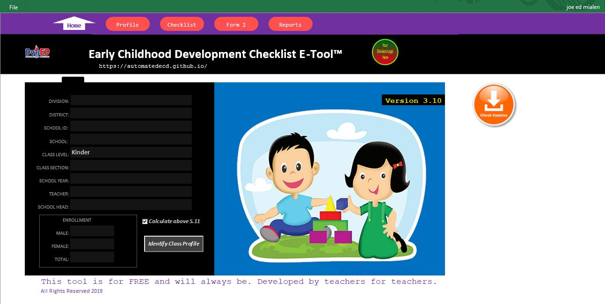
Getting Started with ECD E-Tool - Basic Tutorial
April 19, 2019This Tutorial will guide you the basic things you can do when using the ECD E-Tool Version 3.
Table of Contents
I. Preliminaries
II. Getting Started
- A. Update Class Profile
- B. Update pupil's Basic Profile by Manual Encoding or by SF1 Importing
- C. Manually Encode Father's Name, Age, Occupation, and Child Handedness
- D. Conduct Observation Using the Checklist
- E. Printing the Form 2 (Optional)
- F. One time printing of Form2 (Optional)
- G. Reporting Results to School Form 5 Report on Promotion and Level of Proficiency For Kinder (SF5-K)
I. Preliminaries
- Your computer's Operating System(OS) should atleast Windows 7 or later version(Win8,Win10)
- Your computer should have at least installed version of Microsoft Excel 2010 or later(Microsoft Excel 2010, Excel 2013, Excel 2016 or Excel 2019)
- Your computer should have at least 2gigabytes of RAM (Random Access Memory) or higher
- Your Excel macro should be enabled
-
Enable macros when the Message Bar appears
-
When you open a file that has macros, the yellow message bar appears with a shield icon and the Enable Content button. If you know the macro, or macros, are from a reliable source, use the following instructions:
On the Message Bar, click Enable Content. The file opens and is a trusted document.
The following image is an example of the Message Bar when macros are in the file.
-
Change macro settings in the Trust Center
-
AMacro settings are located in the Trust Center. However, if you work in an organization, the system administrator might have changed the default settings to prevent anyone from changing settings.
Important: When you change your macro settings in the Trust Center, they are changed only for the Office program that you are currently using. The macro settings are not changed for all your Office programs.
1. Click the File tab.
2. Click Options.
3. Click Trust Center, and then click Trust Center Settings.
4. In the Trust Center, click Macro Settings.
5. Make the selections that you want.
6. Click OK.
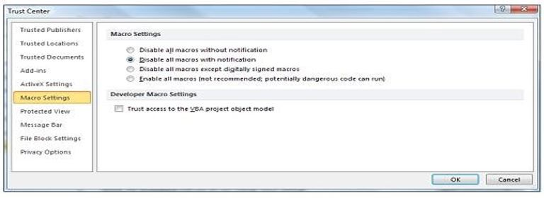
Souce: https://support.office.com/en-us/article/enable-or-disable-macros-in-office-files-12b036fd-d140-4e74-b45e-16fed1a7e5c6
A. Target End-Users
-
The target end users of ECD E-Tool are the DepEd Kindergarten teachers with DepEd LIS accounts.
B. System Requirements
C. Macro Enabling
-
A macro is a series of commands that you can use to automate a repeated task, and can be run when you have to perform the task.
II. Getting Started
- A.1. ) First, once you open the tool you will be directed to the Home Page (see Figure 1). In the Home Page click "Identify class profile" button to Edit the class profile (see Figure 1.1).
Figure 1:
Figure 1.1:
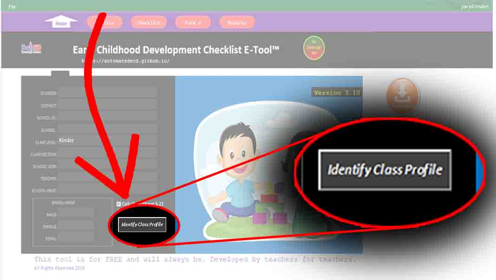
A window form will pop-up. Fill out the entry boxes. Fill up the appropriate data needed. Note that any information should be the same with the LIS SF1 data formatting. Make sure that all information should be the same as they appear in SF1. Some of the entries are auto-filled based on the school ID identified in its database. Then , click save.(see Figure 2)
Figure 2:
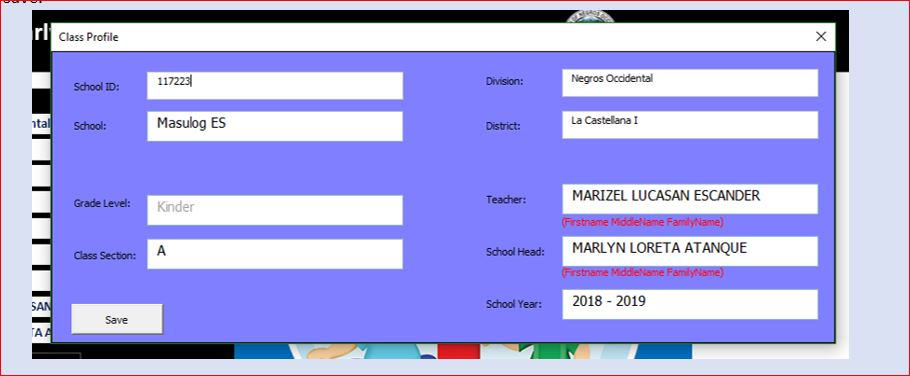
- B.1.) Click Profile button (see Figure 3). You will land to pupils profile page. This is the page where you need to encode the name of the pupils name, date of birth, pupils gender , etc..
Figure 3:
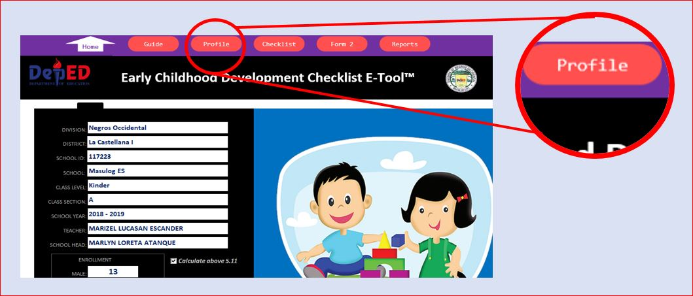
You can manually encode or automate data encoding of pupil's basic information.
1. Use Pupil's Basic Profile Manual Encoding when SF1 is not yet available. But make sure that when encoding, the name format should follow SF1 name format so that you can update pupils data form SF1 when it is already available.
2. Use Pupil's Basic Profile Automated Encoding (by importing data from downloaded SF1) when SF1 is already available and your about to begin from scratch. To automate encoding (importing SF1) follow the following steps:
- B.2.1 Click "Use Data from SF1". (see Figure 4)
Figure 4:
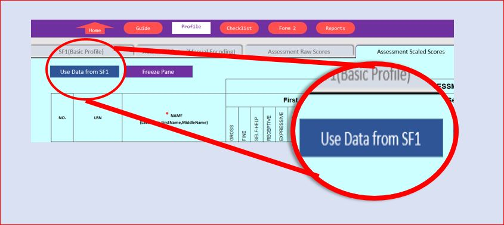 - B.2.2 Tick "Create New Class from SF1" and click OK. (see Figure 5)
Figure 5:
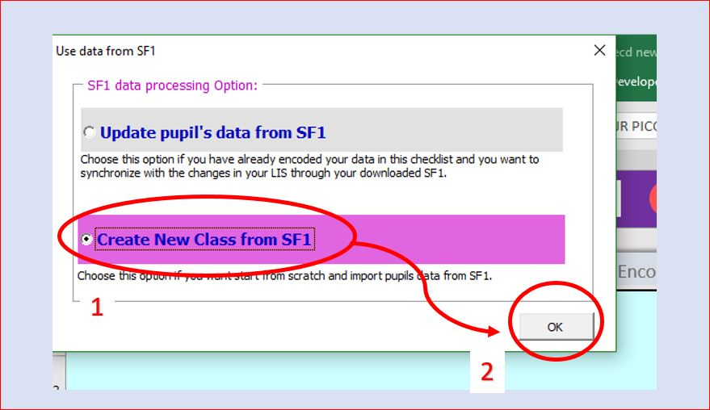 -
B.2.3 Browse your folder and select your Kinder SF1 downloaded from LIS and click OK (see Figure 6). It will notify you if the selected file does not have the information based on the homepage identified.If that is the case, check and edit the information in the homepage and try again
Figure 6:
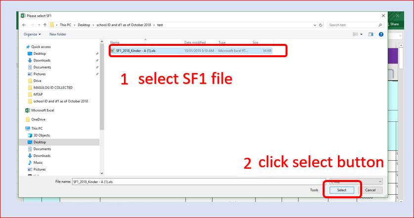
The following is the color coding used to indicate availability of encoding options for encoding (applicable only to "Checklist" and "Profile" pages).
Manual Or Automated - Cells with this color can be manually encoded or automation is provided when possible.Example: Basic profile of the pupil can be manually encoded , but an import facility is provided to import data from available downloaded SF1.
Automated - Cells with this color are protected, hence direct editing is not allowed. The data on these cells are dependent from other cells' data input. So, there is no need edit directly.
Figure 7:
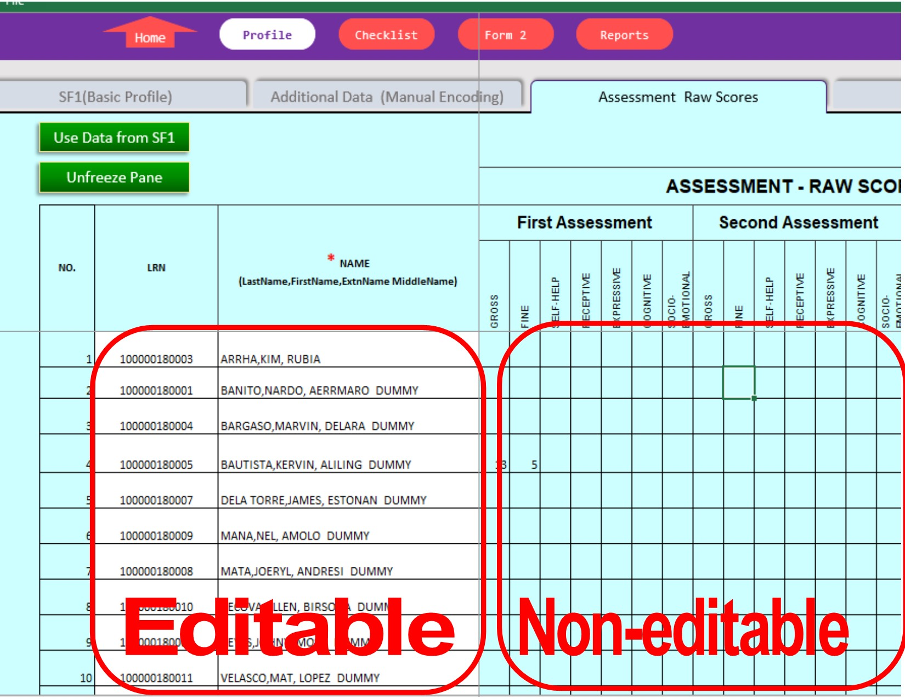
- B.2.1 Click "Use Data from SF1". (see Figure 4)
-
C.1. Click "Additional Data(Manual Encoding)" tab within the Profile page (see Figure 8), fill-up necessary data. Note: Encode only on white fields. Because this information cannot be found in SF1, manual encoding is the only option.
Figure 8:
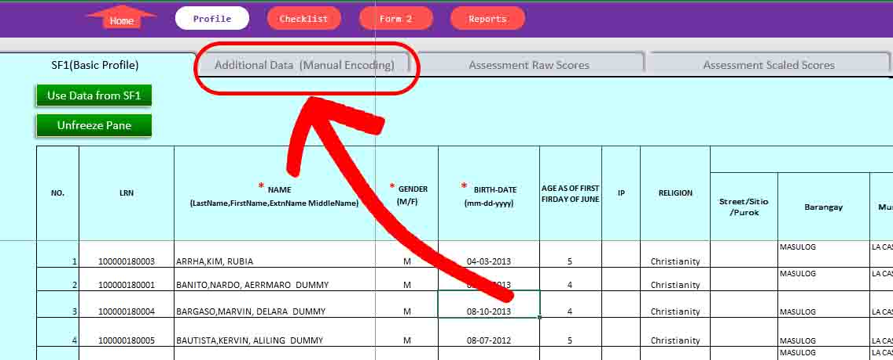 -
D.1. Click "Checklist" button to switch to to "Checklist" page. (see Figure 9)
Figure 9:
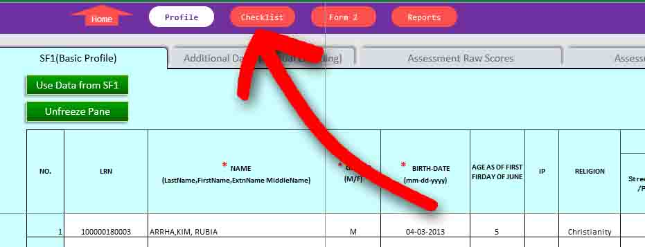 -
D.2. Searching the name of the pupil you want to observe.
On the "Checklist" page, you can type the name of the pupil in the search box, select name of the pupil in the drop-down list or navigate using next of previous button. (see Figure 10)
Figure 10:
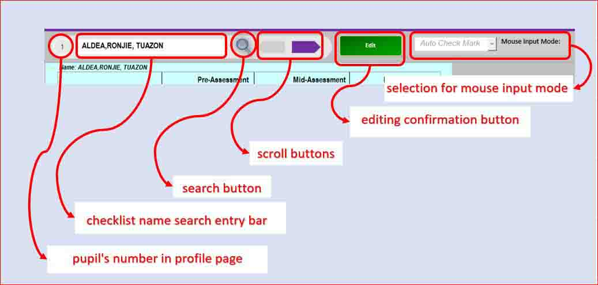 -
D.3. Editing or updating pupil's checklist.
If desired pupil to be observed is found, click "Edit" button to enable editing (see Figure 11). Update the date of observation (see Figure 12), then provide proper marking for your observation for each indicator for each domain for specified assessment period.
Figure 11:
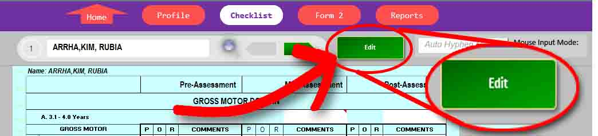
Figure 12: (Updating Date of Observation)
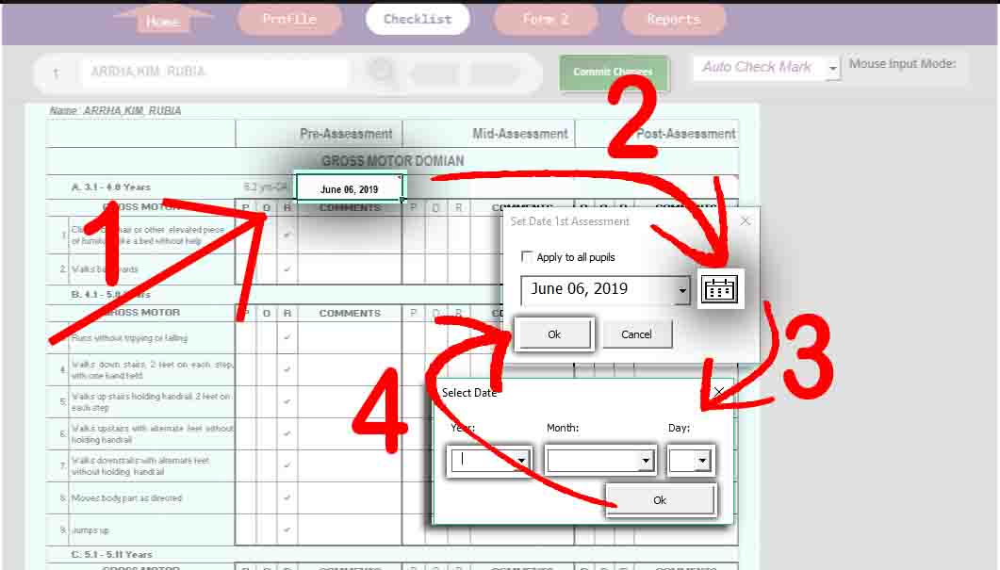 -
D.3. Committing changes to save changes.
After the observation, click "Commit Changes" button to save what ever changes has made in the checklist (see Figure 13). You can go back anytime if changes or update are necessary.
Figure 13:
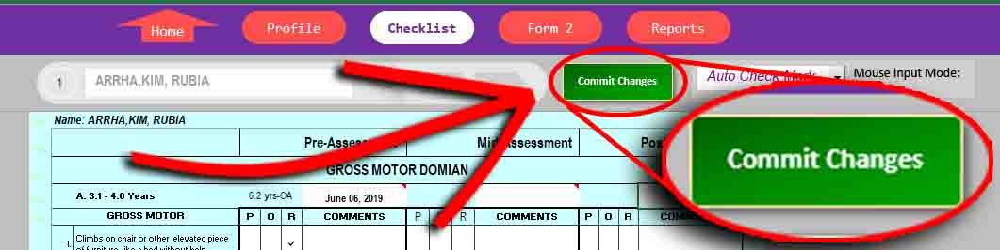 -
E.1. Selecting assessment period to print.
The ECD E-Tool has the option to which assessment periods you can print. In the Assessment period drop-down list, choose the assessment period you wish to print (see Figure 14). Then search the name of the pupil you wish to print. (see Figure 15)
Figure 14:
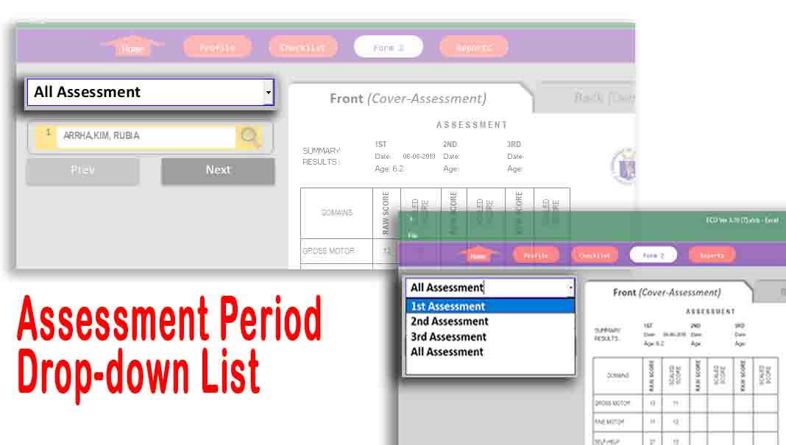
Figure 15:
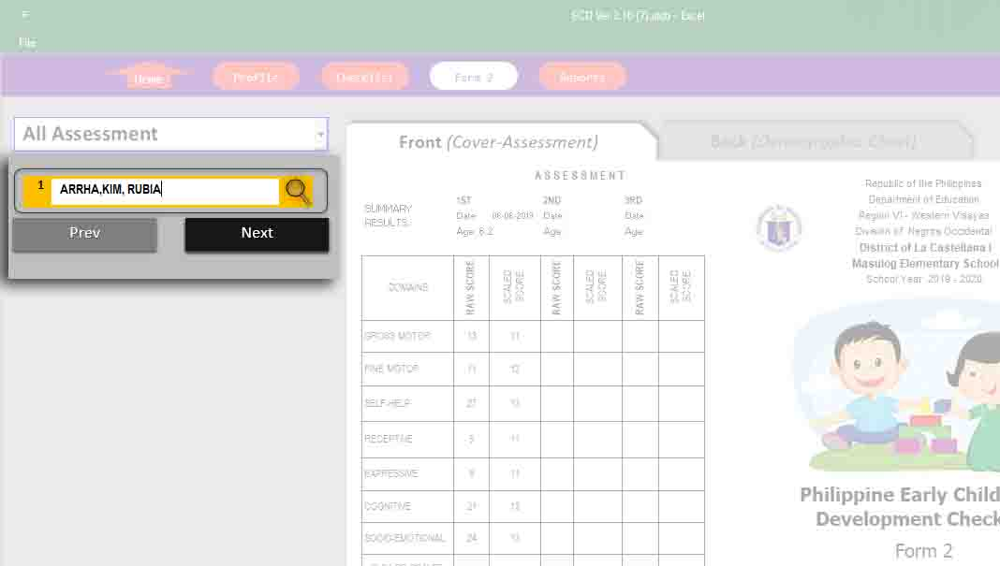 -
E.2. Printing the cover page.
The form2 is set to short sized paper. To print the cover page, click "Front (Cover - Assessment) (see Figure 15). Click "File" tab (see Figure 16), then select "Print". Set printer with "Ready Status". Set the paper size to "Letter" , and then click the big "Print" button. Test print before with spare paper to see the result to make sure you are printing the proper orientation of the target paper.
Figure 15:
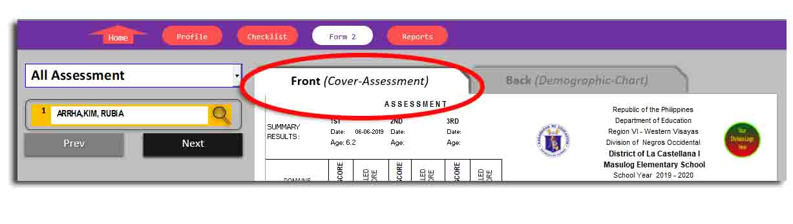
Figure 16:
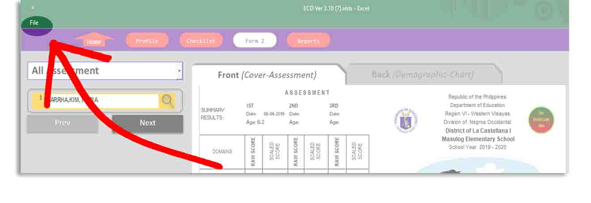 -
E.3. Printing the back page.
Click the "Back (Demographic - Chart)" tab (see Figure 17). Click "File" found in upper left corner of the application window (see Figure 16), select "Print". Test print before with spare paper to see the result to make sure you are printing the proper orientation of the target paper.
Figure 17:
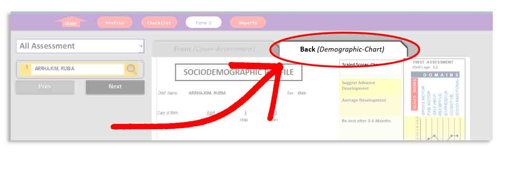 -
F.1. Selecting assessment period for one-time printing.
To print the form2 for one-time printing, in the Assessment period drop-down list, choose the "All assessment" item. Next, execute above procedure stated in step E.2 and step E.3. -
G.1. ECD Checklist Individual Result Form to SF5-K
Click "Reports" button to switch to "Reports" page. Then, Click "ECD Checklist Individual Result" tab. This form displays pupils individual results for each assessment period. Only the "Third Assessment" will be manually reflected to your SF5-K for Summative Assessment Standard Score
For now, this process will be manually done, but for future development, we will automate this process.
A. Update Class Profile
: The class profile information, excluding teacher's and principal's name, will be the reference whether to reject or accept the SF1 you trying to import.
B. Update pupil's Basic Profile by Manual Encoding or by SF1 Importing
C. Manually Encode Father's Age, Occupation, and educational Attainment, mother's age, and Child Handedness
D. Conduct Observation Using the Checklist
E. Printing the Form 2 (Optional)
F. One time printing of Form2 (Optional)
G. Reporting Results to School Form 5 Report on Promotion and Level of Proficiency For Kinder (SF5-K)
ECD E-Tool Getting Started - Video tutorial
Go to Top
Leave Your Comment